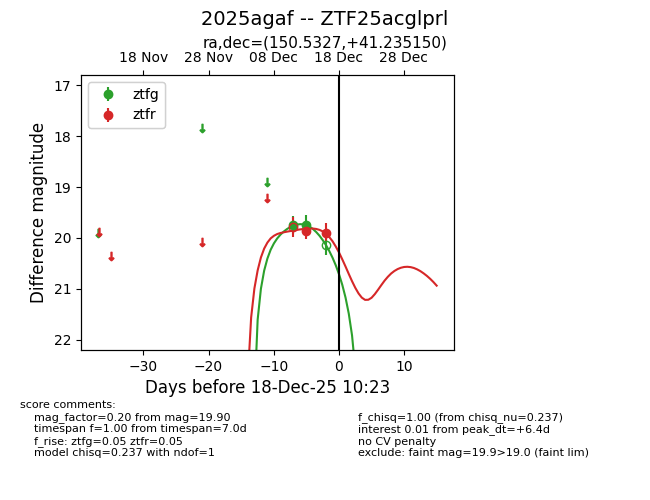
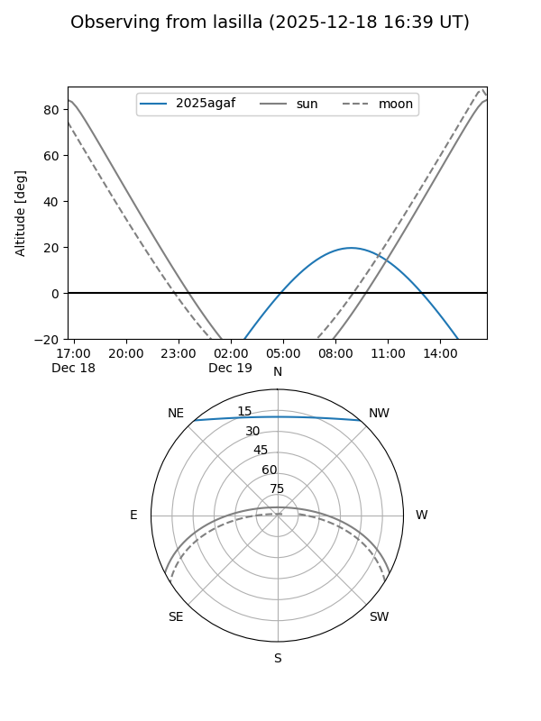
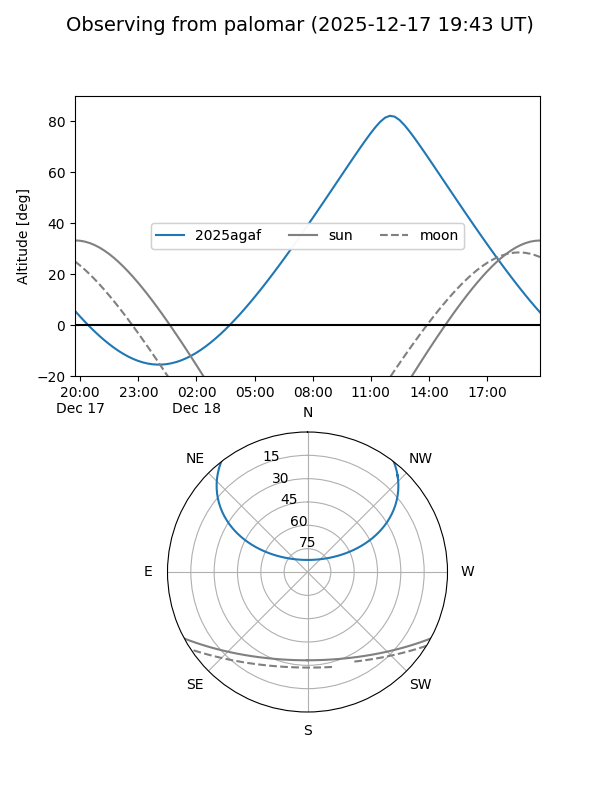
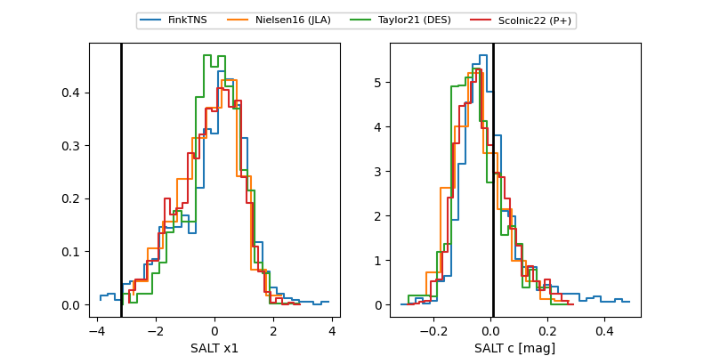

2025agaf
Target 2025agaf at 2025-12-20 12:19
Aliases and brokers:
FINK: fink-portal.org/ZTF25acglprl
Lasair: lasair-ztf.lsst.ac.uk/objects/ZTF25acglprl
ALeRCE: alerce.online/object/ZTF25acglprl
TNS: wis-tns.org/object/2025agaf
YSE: ziggy.ucolick.org/yse/transient_detail/2025agaf
alt names
ZTF25acglprl (ztf,fink_ztf)
2025agaf (tns,yse)
Coordinates:
equatorial (ra, dec) = 150.5327,+41.23515
equatorial (HMS+DMS) = 10:02:07.84,+41:14:06.54
galactic (l, b) = (179.5927,+52.69040)
Flags:
Photometry:
last ztfg=20.28, ztfr=20.02
3 ztfg, 3 ztfr detections
Lightcurve

Visibility


Additional plots
